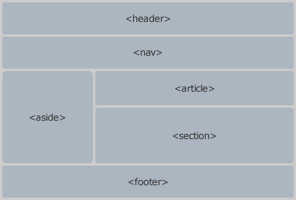

En relación a la estructura de una web, el lenguaje HTML5 utiliza unas etiquetas que le aportan semántica. El lenguaje es capaz de diferenciar, por ejemplo, entre el encabeza del documento y el pie. Google y otros buscadores son capaces de detectar dicha estructura.

Las etiquetas referentes a la estructura en HTML5 serían:
- header: Representa un grupo que sirve de introducción a un contenido.
Normalmente define la cabecera del documento, en donde suelen ir el título del sitio y el logo.
El título se podría poner en un h1, y luego, en el article, poner otro h1. Semánticamente serían h1 distintos, ya que cada uno está en una zona distinta de la página web.
- hgroup: Sirve para agrupar por ejemplo un título con su subtítulo. Por ejemplo, el título y el lema
- nav: Para incluir dentro (generalmente en una lista) el menú principal de una web. También se puede utilizar para los menús secundarios.
- article: Representa un contenido que puede ser distribuido o reutilizado como parte independiente, por ejemplo en sindicación. Por ejemplo, podría ser una entrada de un foro o de bitácora, el artículo de un periódico, o un comentario que envía un usuario.
A veces los artículos se pueden anidar, y los de dentro están relacionados con el artículo externo y principal. Por ejemplo, sería el caso de cada comentario de un artículo.
- section: Representa una sección general de un documento o aplicación. Es un grupo temático de contenido, y suele tener un encabezado.
Por ejemplo, los capítulos de un libro, las pestañas de un contenido dividido en pestañas, o las secciones numeradas de una tesis. La página de inicio de un sitio web podría dividirse en secciones tales como la introducción, novedades, y la información de contacto.
- aside: Es una sección que de alguna forma está relacionada con el contenido principal que la rodea, pero se puede considerar aparte de dicho contenido.
En estas secciones se suelen poner lateralmente menús secundarios (dentro de nav), anuncios y banners o citas.
Podemos encontrar un pie en cualquiera de las otras secciones del documento (header, article o secction).